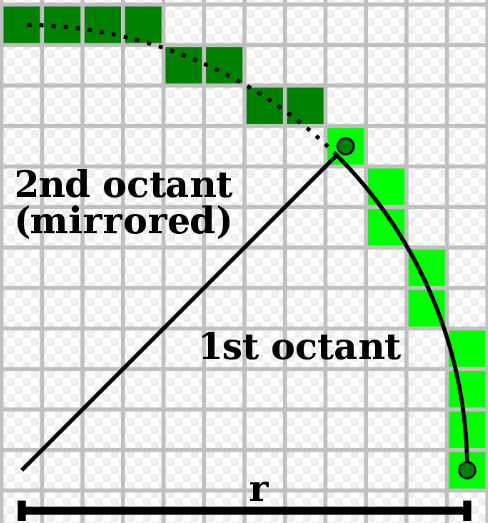
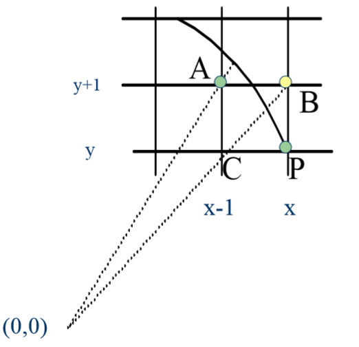
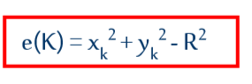
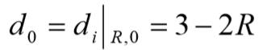
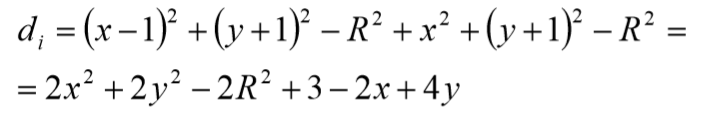
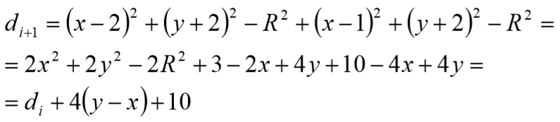
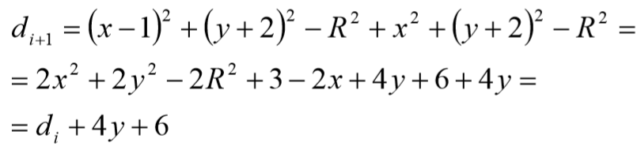

Katedra za računarstvo i informatiku
Tema: Rasterizacija kružnice
Katedra za računarstvo i informatiku
Tema: Rasterizacija kružnice
Bresenham-ov algoritam
Bresenham-ov algoritam crta svih osam oktanata "istovremeno",
počevši od svakog kardinalnog smera (0°, 90°, 180°, 270°)
i vrši proširivanje kako bi dostigao najbliži višestruki umnožak od 45° (45°, 135°, 225°, 315°).
Može da odredi gde treba da se zaustavi, jer kada je x = y, dostigao je 45°.
Razlog korišćenja ovih uglova se može videti i na sledećoj slici:

Kako y raste, ne dolazi do preskakanja niti ponavljanja ni jedne vrednosti dok se ne dostigne 45°.
Dakle, tokom while petlje, pri čemu se y inkrementira za 1 u svakoj iteraciji, i x dekrementira za 1 tom prilikom, nikada se ne dolazi do prekoračenja jednice.
Ovo ponašanje se menja kada se dostigne ugao od 45°.
Matematička osnova
Bresenham-ovalgoritam za crtanje kružnice se svodi na odlučivanje o izboru između dve kandidat-tačke (A i B) između kojih prolazi kružna linija.

Pretpostavimo da je kružnica prošla kroz tačku P(x,y) i da treba odlučiti da li će "proći" kroz A(x-1,y+1) ili B(x,y+1).
Ovde ćemo uvesti pojam kvadratne greške ( odstupanja u odnosu na geometrijski tačnu kružnicu)u tački K:

Pri čemu važi:
1) e(K)>0, za K izvan kruga;
2) e(K)=0, za K na kružnici;
3) e(K)<0, za K unutar kruga.
Algebarski zbir grešaka je: d = e(A) + e(B).
Ovde usvajamo sledeće:
1. A, B unutar kruga (teoretski): e(A)<0, e(B)<0 => d<0, bira se B;
2. A,B izvan kruga (teoretski): e(A)>0, e(B)>0 => d>0, bira se A;
3. A unutar, B izvan kruga: e(A)<0, e(B)>0
3.1. abs(e(A))>abs(e(B)) => d<0, bira se B
3.2. abs(e(A))
U početnom koraku imamo da je:

U i-tom koraku pak imamo:

U i+1 koraku pri čemu je i-tom koraku d>0 pa smo izabrali tačku A:

U i+1 koraku pri čemu je i-tom koraku d<0 pa smo izabrali tačku B:

Pseudokod
U polju ispod je dat pseudokod za rasterizaciju kružnice korišćenjem Bresenham-ovog algoritma.
1.x=r;
2.y=0;
3.d= 3-2*r;
4.while x>y
5.WritePixel8(x, y, value);
6.if d<0
7.d+=4*y+6
8.else
9.d+=4*(y-x)+10;
10.x--;
11.endif
12.y++;
13.end while
14.if x==y
15.WritePixel8(x, y, value);
16.endif
Prednosti
Glavna prednosti Bresenham-ovog algoritma je što se kompletna računica svodi na celobrojnu aritmetiku. Koriste se samo sabiranje, oduzimanje i množenje.